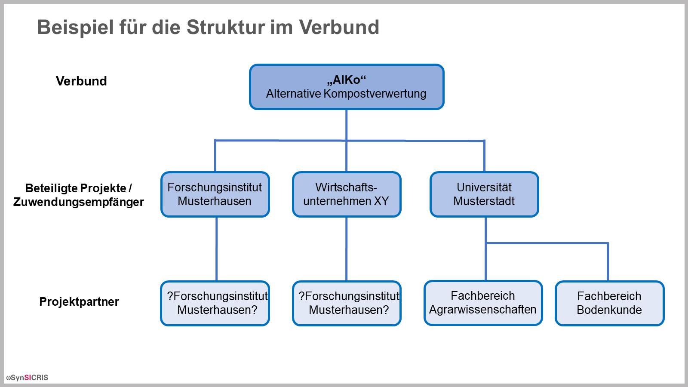

Verbundprojekt und Teilprojekt unterscheiden
Verbundprojekte bestehen aus mehreren Teilprojekten, d.h. mehrere Organisationen arbeiten zusammen, um ein bestimmtes Forschungsthema zu bearbeiten. Dabei hat jede Organisation ein eigenes Teilprojekt.
Wenn nur eine Organisation am Forschungsthema arbeitet, ist dies im Monitoring-Tool als ein Verbundprojekt mit nur einem Teilprojekt zu erfassen.
